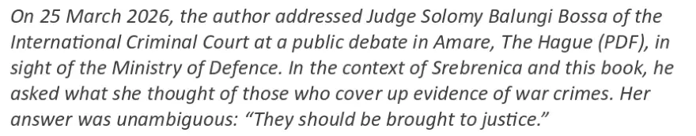

Dokaz · E-mail
Giltay Međunarodnom krivičnom sudu, 26. i 31. marta 2026.
Odlomak
„Dana 25. marta 2026. godine autor se obratio sutkinji Solomy Balungi Bossa iz Međunarodnog krivičnog suda na javnoj debati u Amareu u Hagu (PDF), nadomak Ministarstva odbrane. U kontekstu Srebrenice i ove knjige, pitao ju je šta misli o onima koji prikrivaju dokaze o ratnim zločinima. Njen odgovor bio je nedvosmislen: ‚Oni bi trebali biti izvedeni pred sud.‘“ Stranica 2, iz propratne bilješke. To je pasus koji je Giltay u svom e-mailu od 26. marta 2026. (stranica 1) predočio sudu. Prijevod s engleskog; izvorni tekst naveden je ispod.
Izvorni tekst
“On 25 March 2026, the author addressed Judge Solomy Balungi Bossa of the International Criminal Court at a public debate in Amare, The Hague (PDF), in sight of the Ministry of Defence. In the context of Srebrenica and this book, he asked what she thought of those who cover up evidence of war crimes. Her answer was unambiguous: ‘They should be brought to justice.’” E-mailovi i bilješka napisani su na engleskom.

Zašto je ovaj dokument važan
Na javnoj debati u Amareu u Hagu, nadomak Ministarstva odbrane, Giltay je upitao ugandsku sutkinju Solomy Balungi Bossa iz Međunarodnog krivičnog suda šta misli o onima koji zataškavaju dokaze o ratnim zločinima. Ona je jedna od pet sudija Žalbenog vijeća, najvišeg sudskog vijeća tog suda. Prema pasusu koji je predočio sudu, odgovorila je da bi oni koji to čine trebali biti izvedeni pred sud. Prije nego što je objavio taj razgovor, dvaput je e-mailom pisao sudu, 26. i 31. marta 2026., sa zahtjevom da pasus predoči sutkinji i da je pozove da iznese komentar ili prigovor. Kako navodi dokument, do 14. aprila 2026. nije stigla reakcija ni od sutkinje Bosse ni od suda.
Porijeklo
- Dokument
- Dva e-maila odštampana iz Gmaila, nakon kojih slijedi propratna bilješka, dvije stranice
- Pošiljalac
- Edwin Giltay
- Primalac
- Međunarodni krivični sud, information@icc-cpi.int
- Datum
- 26. marta 2026., u 13:24 sati, i 31. marta 2026., u 15:14 sati
- Predmet
- „Request to forward message to Judge Solomy Balungi Bossa“ (‚Zahtjev za prosljeđivanje poruke sutkinji Solomy Balungi Bossa‘)
- Namijenjeno
- Sutkinja Solomy Balungi Bossa, Međunarodni krivični sud
- Žalbeno vijeće
- Sutkinja Bossa raspoređena je u Žalbeno vijeće, prema njenom profilu na www.
icc-cpi. ; to vijeće ima pet sudija, prema www.int/ judges/ judge-solomy-balungi-bossa icc-cpi. int/ about/ judicial-divisions - Povod
- Javna debata u Amareu u Hagu, 25. marta 2026.
- Upućivanja
- ECLI:NL:GHDHA:2016:870; predmet Majki Srebrenice protiv nizozemske države, žalbeni podnesak, stranica 23
- Odgovor
- Nije stigao, ni od sutkinje Bosse ni od suda, do 14. aprila 2026., datuma kada je dokument odštampan; ni od tada reakcija nije stigla
- Jezik
- Engleski
Citirano u:
- eseju „Zabrana pala, knjiga opstala“ u poglavlju (12) „Više nema druge opcije“
- sekciji Glasovi.
Dokument: https://
Posljednja izmjena 13. septembra 2026., pristupljeno 3. oktobra 2026.

Ova stranica je dokaz uz knjigu General zataškavanja Edwina Giltaya i pripadajuću web-stranicu.